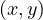
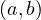

Professor: Brice Mayag
Student e-mail: jose-antonio.lorencio-abril@student-cs.fr
This is a summary of the course Decision Modeling taught at the Université Paris Saclay - CentraleSupélec by Professor Brice Mayag in the academic year 23/24. Most of the content of this document is adapted from the course notes by Mayag, [1], so I won’t be citing it all the time. Other references will be provided when used.
There are many definition of what a model is, depending on the perspective used. For example, a model can be understood as a ’standard or example for imitation or comparison’ or as a ’person employed to wear clothing ot pose with a product for purposes of display and advertising’. Nonetheless, in the context of decision modeling, which is the one in which we are interested, the definition of model is:
Models are useful to enhance our understanding of the world to improve our decision making, and they enable us to elaborate a scientific methodology to solve a problem in a duplicable way and with the aim of reducing bias in mind.
A model is said to be deterministic if the outcomes are precisely determined through known relationships among states and events. This kind of models always produce the same output when given the same input. On the other hand, a model is probabilistic (or stochastic) when all the data that it tries to explain is not known with certainty.
For example, the Newtonian model for gravity is deterministic, while a prediction model for college acceptance is probabilistic.
Deterministic models are used in domains such as Multi-Attribute Decision Making or Linear Programming, among others; while probabilistic models are used in queuing problems, simulations, etc.
We can also classify the data that is used to define a model into qualitative and quantitative. The former refers to data that is expressed in terms of words, while the latter is data easily expressed using numbers. An example of qualitative data is the hair color of people in class, and for quantitative data is the height of people in class.
We can be more precise in our wording, and call the models that we are talking about formal models, which refer to those models that provide a precise statement of the components of the model and their relationships, usually by means of mathematical equations. This make them easy to communicate precisely and the ability to give replicable results. However, being formal does not mean being true. A model can fail to represent the reality that it tries to describe.
Decisions appear in many domains, including Mathematics, Economics, Computer Sciences, Psychology,...
In the previous definition, a Decision Process refers to a strategy of intervention, such as aid, communication or justification, among others. There are many ways to provide decision aid and no single way to compare methods. This, together with the fact that different models may lkead to different recommendations, makes it hard to assess when a Decision Analysis model is ’good’ or, more appropriately, ’suitable’.
Therefore, we cannot compare decision making to solving a well-defined problem, as the former is highly dependent on opinions, interests and, more generally, different human factors involved. In every decision process, there are several possible interventions, among which we can find imagining compromises, communicating, coordinating, controlling, motivating or conducting change.
There are many different models used in Decision Analysis nowadays, with the advantages of:
Providing a clear language that can be leveraged as a communication tool
Capturing the essence of a situation, acting a structuration tool
Answering ’what-if ’ questions, serving as a exploration tool
On the other hand, their drawbacks are their high complexity and opaqueness. In addition, in many situations people could argue that such models are not necessary because they already know how to take decisions and they would over-complicate the process; or would ask for higher-level explanations or ideas that are not suitable for formalization; or would rather rely on their intuition.
Formulation: translate the problem scenario into a mathematical model.
This involves the definition of the problem and the development of a decision model, i.e., the definition of the variables or measurable quantities that vary, and the parameters or measurable quantities inherent to the problem.
Solution: solve the mathematical expressions from the formulation.
This process involves the development of the solutions by correctly manipulating the model to arrive at the best solution, and the testing of the solution, to check that it works as expected and meets the expectations.
Interpretation: discover the implications of the results.
This is usually done by conducting sensitivity analysis, i.e., testing the different outcomes obtained under a variety of states; and implementing results, enacting the solutions and monitoring the performance.
The outlined process is very high level, and there are many possible problems that can arise:
Defining the problem: we can find conflicting viewpoints that impact differently the stakeholders.
Model development: it is not always easy to find the formal model that describes the problem at hand, and it is usual to make adaptations.
Acquering data: can be hard in some scenarios, as well as checking its validity and correctness.
Developing a solution: we can find many limitations, such as only finding one answer, finding approximate answers, prohibitive computing times,...
Implementation: it is crucial that the solution is feasible to be implemented, both from a managerial point of view and from the user perspective.
Decisions made by algorithms can be opaque because of technical and social reasons, in addition to being made purposely opaque to protect intellectual property.
Definition 1.4. An algorithm is a sequence of instructions, typically used to solve a class of problems or perform a computation.
It must be:
Finite: it must eventually solve the problem.
Well-defined: the series of step must be precise and understandable.
Effective: it must solve all cases of the problem for which it was defined.
Usually, we find contradictory objectives when developing an algorithm, because simpler algorithms are usually time intensive, while algorithms that are very efficient are very complex are hard to understand.
This concept is opennes about the purpose, structure and underlying actions of the algorithms used to search for, process and deliver information. Two important properties of transsparency are:
Explanability: systems and institutions that use algorithm decision making are encouraged to produce explanations regarding both the procedures followed by the algorithm and the specific decisions that are made. This is specially relevant in public policy contexts.
Accountability: institutions should be held responsible for decisions made by the algorithms they use, even if it is not feasible to explain in detail how the algorithms produce their results.
Relations can be expressed as directed graphs. For instance, a relation R of a set X can be represented as the graph GR = , where NX are the nodes, representing each element in X and ER are the edges, representing each pair in R. The edges are constructed in such a way that e =  ∈ ER ⇐⇒ xRy.
Another way to represent relations is using matrices. We can construct a matrix MR by
where
Depending on how a relation is constructed, it can possess different properties. Some interesting properties are defined as follows:
Definition 2.2. A binary relation R on a set X is said to be:
Reflexive if xRx,∀x ∈ X.
Irreflexive if not,∀x ∈ X.
Complete if for every x,y ∈ X, we have xRy or yRx (or both).
Weakly complete if for every x,y ∈ X,x≠y, we have xRy or yRx (or both).
Symmetric if ,∀x,y ∈ X.
Asymmetric if ,∀x,y ∈ X.
Antisymmetric if ,∀x,y ∈ X.
Transitive if ,∀x,y,z ∈ X.
Negatively transitive if ,∀x,y,z ∈ X.
Semi-transitive if ,∀x,y,z,t ∈ X.
In addition, we can define paths and cycles on relations, analogously as how it is done in graph theory:
For every relation, we can extract two subrelations, as its symmetric part and its asymmetric part:
The symmetric part is denoted by I because we can understand this as the all the indiferent pairs of R. In others words, if we understand a relation as a preference over the elements in X, then xRy would mean x is at least as convenient as y. Therefore, if we have xRy and yRx, we could think of them as equally convenient, so the decision between them is indiferent. On the other hand, the asymmetric part is denoted by P, from preference, following a similar reasoning.
When we have two different relations, R and R′, on the same set, X. We can define their concatenation:
The following proposition establishes different relationships between the concepts we have seen so far:
Proof. Let’s go one by one:
By definition, we have xR∙Ry ⇐⇒∃z : xRz ∧zRy. Since R is transitive, then it must be xRy. Therefore R ∙ R ⊂ R.
If R is not irreflexive, then there exists x ∈ X such that xRx, but this is a symmetric relationship, so R cannot be assymetric.
Trivial.
By reduction ad absurdum, seeking a contradiction, let’s assume that R is not transitive. This means
that there exist x,y,z ∈ X such that xRy ∧ yRz but not. By hypothesis, R is asymmetric, so
xRy  not
not . If we combine these two facts, and use the hypothesis that R is negative transitive,
we find that
. If we combine these two facts, and use the hypothesis that R is negative transitive,
we find that
This is a contradiction, because we assumed that yRz. Therefore, R must be transitive.
By reduction ad absurdum, seeking a contradiction, let’s assume that R is not negative transitive. This
means that there exist x,y,z ∈ X such that not ∧not, but xRz. By hypothesis, R is complete,
so not
∧not, but xRz. By hypothesis, R is complete,
so not  zRy. If we combine the two facts, xRz and zRy, then the transitivity of R gives us
xRy#, which is a contradiction with our assumption, not. Therefore, R must be negative transitive.
zRy. If we combine the two facts, xRz and zRy, then the transitivity of R gives us
xRy#, which is a contradiction with our assumption, not. Therefore, R must be negative transitive.
There are some relations that fulfill several of the properties that we have seen, and that hold special characteristics. For instance:
Definition 2.6. Different types of relations
An equivalence relation is a relation which is reflexive, symmetric and transitive.
A preorder is a relation which is reflexive and transitive.
A weak order or a complete preorder is a relation which is complete and transitive.
A total order or linear order is a relation which is complete, antisymmetric and transitive.
Example 2.4. The relation R = is an equivalence relation. Its graph representation is:
The relation R = is a preorder which is not a complete preorder. Its graph representation is:
The relation R = is a complete preorder. Its graph representation is:
The relation R = is a total order. Its graph representation is:
Exercise 2.1. Let B be a binary relaiton on a set X = defined by
| aBa,aBb,aBc,aBd,aBe,aBf | ||
| bBb,bBc,bBd,bBe,bBf | ||
| cBc,cBd,cBe,cBf | ||
| dBb,dBc,dBd,dBe | ||
| eBd,eBe,eBf | ||
| fBe,fBf |
Give a matrix and a graph representation of B
The matrix form of B is the following:
And the graph representation:
Is B reflexive? Symmetric? Asymmetric? Transitive? Negative transitive? Semi-transitive?
Reflexive: Yes, since xBx,∀x ∈ X.
Symmetric: No, aBb but not.
Asymmetric: No, eBf but fBe.
Transitive: No, dBe and eBf, but not dBf.
Negative transitive: No, not and not but fBf.
Semi-transitive: Yes. Let’s do this little by litte.
If we take x = a, then aBt,∀t, so it will hold. If y = a, then x such that xBa, so it will hold. Same happens if z = a. Finally, if t = a, then aBz,∀z ∈ X, so it also holds.
If we eliminate a (since we have seen all cases in which a is involved), we obtain the relation:
Using the same argument, b will work now. When we remove it, we get:
And once again we can use c. When we remove it, we get:
Now we can repeat the same with e, and when we remove it we obtain a two-element relation, which is always semi-transitive.
Exercise 2.2. Let B and B′ be two equivalence relations on a set X:
Prove that B ∩ B′ is an equivalence relation, where
We need to see that B ∩ B′ is reflexive, symmetric and transitive:
Reflexive: take x ∈ X, then xx ⇐⇒ xBx ∧ xB′x, which holds since B and B′ are reflexive.
Symmetric: take x,y ∈ X such that x y. This means that xBy ∧ xB′y. Since B and B′ are
symmetric, we obtain that yBx ∧ yB′x, and therefore y
y. This means that xBy ∧ xB′y. Since B and B′ are
symmetric, we obtain that yBx ∧ yB′x, and therefore y x.
x.
Transitive: take x,y,z ∈ X such that x y ∧ yz. This means that xBy,xB′y,yBz and
yB′z. Now, since B and B′ are transitive, we obtain xBz and xB′z, so xz.
y ∧ yz. This means that xBy,xB′y,yBz and
yB′z. Now, since B and B′ are transitive, we obtain xBz and xB′z, so xz.
Is B ∪ B′ an equivalence relation, where
Reflexivity and symmetry are preserved, but what about transitivity? It is not... Take X =  and the
relations
and the
relations
Then, they are both equivalence relations, but their union is not. This is shown below:
As we can see, in the union, we find and  , but not , so it is not transitive.
, but not , so it is not transitive.
Could we have the same conclusions if B and B′ are two complete preorders on a set X?
We are been asked if B ∩ B′ and B ∪ B′ are also complete preorders. The answers to both questions is no.
In the case of the intersection, the transitivity is preserved, following the same argument we did for equivalence relations, but completeness is not preserved. To see this, take X = and the relations
| B : | ≻ | ||
| B′ : | ≻ . . |
Then, the intersection is
which is not complete.
As for the union, the opposite happens. Completeness is preserved, because the relations involved are complete. However, transitivity is not preserved. As a counter example, take the following graph visualization:
As we can see, in the union, we find  and but not  .
.
 and
and